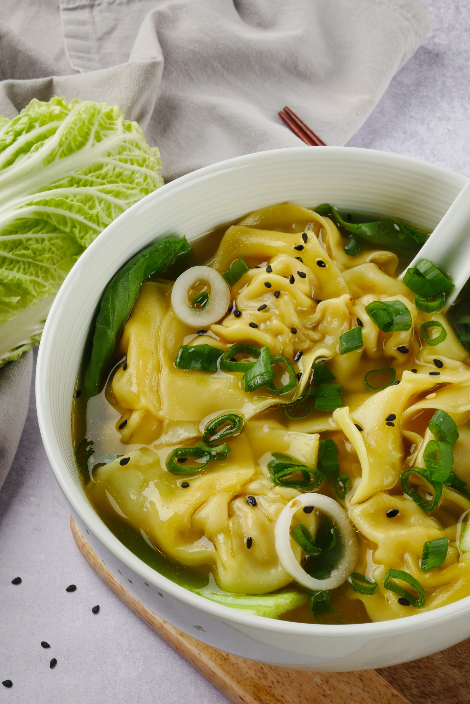

Mì vằn thắn

Food Description
Mì vằn thắn is a Vietnamese Egg Noodle Soup. The Wontons within the well-tasting soup will
make you feel happy in your tummy.
Ingredients
Broth
- 2 lb pork bones
- 2 lb chicken bones
- 6 liters water
- 1/2 cup dried shrimp (soak in warm water for 30 minutes, drain then rinse)
- 1 small dried squid (soak in warm water for 30 minutes, drain then rinse)
- 2 white or yellow onions (roast whole at 400 F for 30 minutes or until oozing)
- 10 shallots (roast whole at 400 F for 30 minutes or until oozing)
- 50 grams rock sugar
- 2 tablespoons salt
- 1 teaspoon MSG (MSG is the greatest contribution to the culinary world. Not sure what's all the fuss is about, but you can omit if preferred)
Soup Toppings / Other Components
- 1 lb package fresh thin egg noodles (cook per package instructions and rinse under hot water to remove excess starch)
- Chinese/Vietnamese Barbecue Pork (Char Siu/Thịt Xá Xíu)
- Shrimp & Pork Wonton (Hoành Thánh Tôm Thịt)
- Cooked fish balls
- Cooked whole shrimps
- 1/2 cup fried shallots
- 2 green onions (slice thinly)
- Fried pork fat (Tép Mỡ)
Directions
Broth
- Clean the pork and chicken bones thoroughly. To clean the bones, fill a large stock pot with enough water that would cover bones without overflowing. Bring water to a boil. Add bones and cook for 5 minutes. Pour content of pot into a colander and rinse bones with cold water. If you are going to re-use the pot for stock, make sure to clean the pot thoroughly too.
- In a stock pot, add 6 liters water and cleaned bones. Bring pot to a boil.
- Add dried shrimp, squid, roasted onions and roasted shallots (remove any burnt peels from the roasted onions and shallots before adding to stock).
- Cook 2 to 2.5 hours on medium low heat, occasionally skim the surface of the stock to keep the broth clear.
- Season with rock sugar, salt and MSG.
Assembly
- To each bowl, add about 1/2 cup egg noodles and 3-5 wontons.
- Ladle on hot broth.
- Top with a few slices of barbecue pork, fish balls and shrimp.
- Garnish with fried shallots, green onions and pork fat.
Back to Homepage